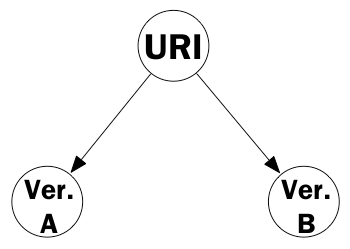
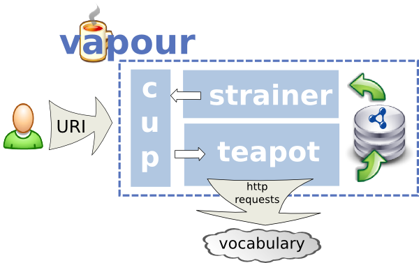

Cooking HTTP content
negotiation with Vapour
Diego Berrueta, Sergio Fernández and Iván Frade (Fundación CTIC)
ESWC2008 workshop on Scripting for the Semantic Web (SFSW2008)
June 2nd 2008
Diego Berrueta, Sergio Fernández and Iván Frade (Fundación CTIC)
ESWC2008 workshop on Scripting for the Semantic Web (SFSW2008)
June 2nd 2008

Apache HTTP Server provides three different approaches to implement content negotiation:

An example of a test over SIOC ontology's namespace:
#req12 a earl:TestRequirement ;
dct:hasPart a earl:Assertion ;
earl:mode http://www.w3.org/WAI/ER/EARL/nmg-strawman#automatic ;
earl:assertedBy #vapour ;
earl:test #TestResponseCode200 ;
earl:subject :rFmCDRcX137 .
:rFmCDRcX137 a earl:TestSubject ;
dc:title "1st request while dereferencing vocabulary URI" ;
dc:date "2008-05-27T20:36:21.318143" ;
earl:httpRequest a http:GetRequest ;
http:accept application/rdf+xml ;
uri:uri http://rdfs.org/sioc/ns# .
earl:httpResponse a http:Response ;
http:responseCode "200" ;
http:content-type "application/rdf+xml" .
Another example of a test over foaf:Person class:
:FmCDRcX51 a earl:TestSubject ;
dc:title "1st request while dereferencing class URI" ;
dc:date "2008-05-27T20:38:34.433181" ;
earl:httpRequest a http:GetRequest ;
http:accept application/rdf+xml ;
uri:uri http://xmlns.com/foaf/0.1/Person .
earl:httpResponse a http:Response ;
http:responseCode "303" ;
http:location http://xmlns.com/foaf/spec/ ;
vapour:nextSubject :FmCDRcX52 .
:FmCDRcX52 a earl:TestSubject ;
dc:title "2nd request while dereferencing vocabulary URI" ;
dc:date "2008-05-27T20:36:24.318251" ;
vapour:previousSubject :FmCDRcX51;
earl:httpRequest a http:GetRequest ;
http:accept application/rdf+xml ;
uri:uri http://xmlns.com/foaf/spec/ .
earl:httpResponse a http:Response ;
http:responseCode "200" ;
http:content-type "application/rdf+xml" .
FIXME
Thank you!
Diego Berrueta <diego.berrueta@fundacionctic.org>
Sergio Fernández <sergio.fernandez@fundacionctic.org>
Iván Frade <ivan.frade@gmail.com>